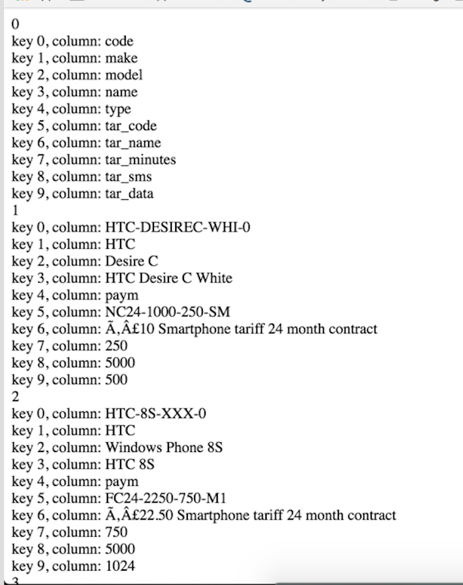

Go to the localhost/essence/index.php in the URL bar of a web browser and wait for the page to load.
There will be two columns displayed, the "make" and the "model" of mobile phones.
If the dropDown is used to sort, the relevant column will appear, to make it easier to compare.
The architecture follows an MVC concept.
Model.php turns the CSV file into an array that is used by the Controller.php
Controller.php has all of the functions that manipulates the data.
View.php handles how the output would look like.
autoload.php loads all of the relevant files and initiates the model,view and controller.
index.php and ajaxHandler.php uses the autoload.php file.
ajaxHandler deals with the AJAX requests from the Javascript
index file has the view.php output.
echo $view->output(); inside a table tag.
csv folder has the csv file that is used in the model.php
images folder has the images used in the website -- specifically, the loader, at this time.
test.css and test.js files that are used for styling and scripting.
Note:
Some of the words in this documentation are highlighted.
Pink is for Code snippets and purple is or variables or function names.
This array specifically, $this->model->data contains a number of arrays in it.
In this documentation, you'll see the word $key and $column mentioned a great deal.
The row is simply the indexes of the array $this->model->data
It is used to determine which line/array that has the information needed for a specific "model".
Inside each $row array, there are multiple arrays. For each item in the array, there is a key and value. For example, In the first index would always be for the "phone code". So when we want to get the "phone code", the $column that is needed is [0].
